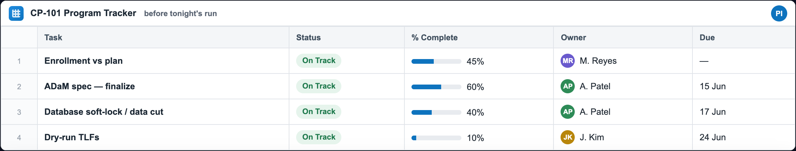
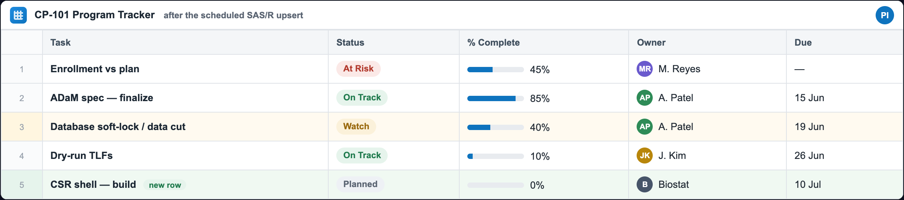
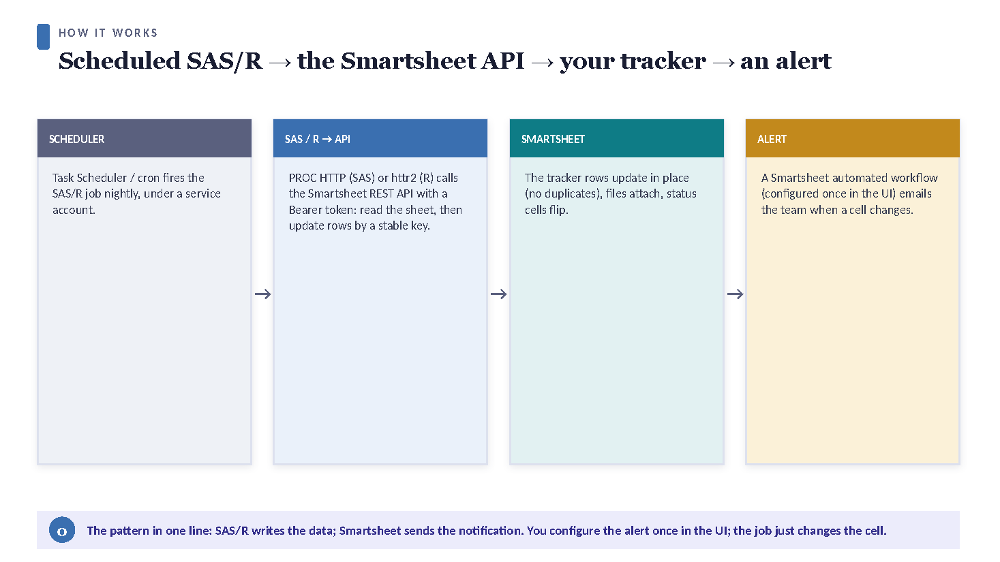
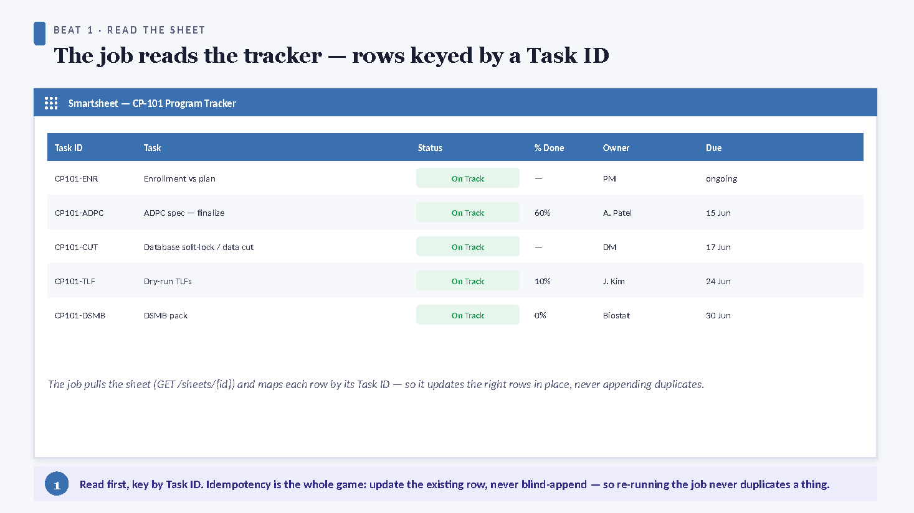
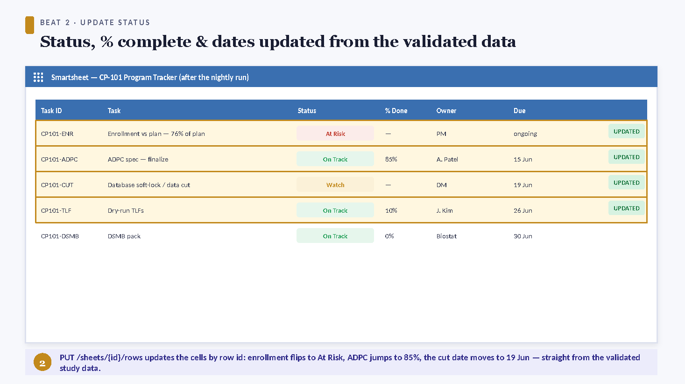
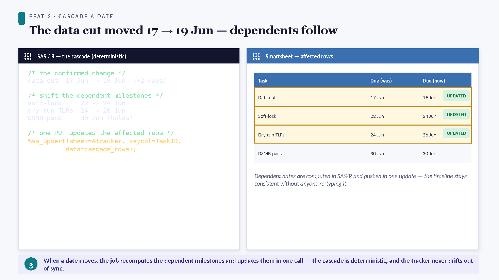
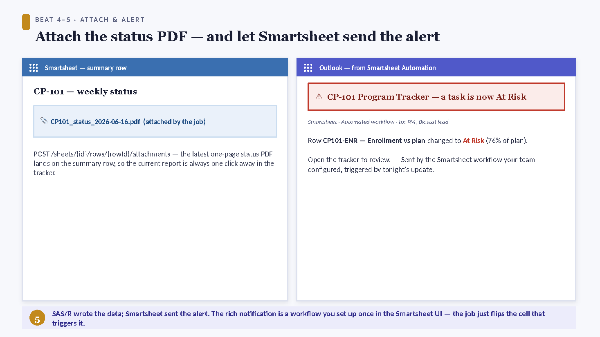
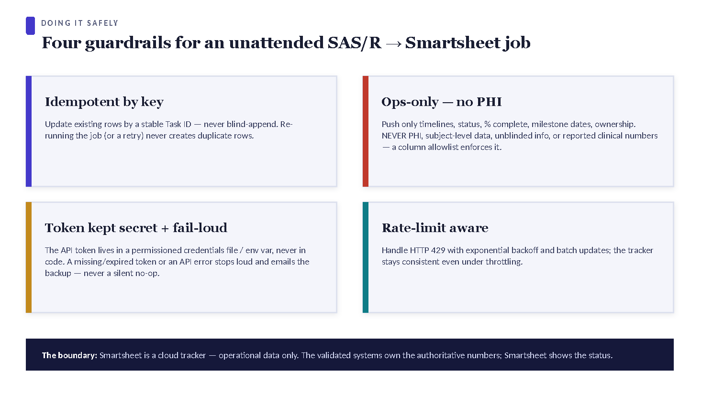

Make Smartsheet update itself — from SAS/R, no AI
A deterministic, no-AI companion that lets a biostatistician keep a Smartsheet program tracker perfectly current automatically — from the validated SAS and/or R you already run on schedule. No copy-paste, no manual status updates, no new vendor, and no PHI egress. It ships with a ready-to-use SAS/R helper library.


The 60-second version
- A scheduler (Task Scheduler / cron) fires a version-controlled SAS or R program after your nightly extract refreshes.
- The program builds an ops-only snapshot (milestone dates, deliverable/QC status, % complete, aggregate counts, ownership) and upserts it to Smartsheet by a stable key — updating rows in place, never duplicating.
- A Smartsheet Automation you set up once — “when Status changes to At Risk → alert the PM” — fires the email / mobile push / Teams or Slack message.
- The job fails loud on any error and ends with a heartbeat, so a stale tracker can never masquerade as a fresh one.
See it end-to-end in The tracker that updates itself — one nightly run on Study CP-101.
Why a biostatistician wants this
The program tracker stops being a chore you maintain by hand and becomes a by-product of the pipeline you already run. The numbers on the sheet are exactly the ones your validated programs computed; the PM gets alerted the moment something slips; and because only non-sensitive operational data crosses, there is no new approval gate — just your normal program validation.
The loop — scheduler → SAS/R → Smartsheet cells → Smartsheet alert
Every component already exists. SAS and R talk to the Smartsheet REST API directly; you do not need any add-on product, connector, or middleware.
How SAS talks to Smartsheet
PROC HTTP makes the authenticated REST call (Bearer token in the header); the JSON LIBNAME engine parses the response straight into datasets. A GET on /2.0/sheets/{id} returns the columns and rows; a PUT/POST on /2.0/sheets/{id}/rows updates or appends. The helper library wraps all of this as %ss_* macros.
How R talks to Smartsheet
httr2 builds the request (req_auth_bearer_token(), req_retry() for throttling) and jsonlite handles the bodies; the same operations are ss_colmap(), ss_get_rows(), ss_upsert(). Pin packages with renv; schedule with cronR / taskscheduleR.
| Concern | How the library handles it |
|---|---|
Column ids drift — titles/order can change; only columnId is a stable address. | The column map is rebuilt every run from a fresh GET; values are written by id, never by position. |
| Rate limits — ~300 requests/min/token. | %ss_http / req_retry() retry 429 & 5xx with exponential backoff; batch writes go in one array, not row-by-row. |
| Pagination — large sheets page their rows. | Reads request includeAll=true so the key→row map is complete. |
What a biostatistician should automate
Everything here is operational — status, dates, counts, ownership — the data that belongs on a tracker. None of it is participant-level or clinical.
| Use case | What the nightly SAS/R job writes | The alert Smartsheet then sends |
|---|---|---|
| Deliverable & milestone status | RAG status, % complete, planned vs actual dates for each tracked task (DB lock, ADaM, TLFs, CSR sections), keyed by a stable Task code. | On any task → At Risk: alert the PM and the task owner. |
| QC / double-programming status | Per-output QC state (not started / in progress / passed / discrepancy) rolled up from your validation log. | On a discrepancy logged: notify the QC reviewer; reminder if it ages. |
| Enrollment vs plan (aggregate) | Actual vs planned counts by cohort/site — counts only, never a participant. | On actual falling below plan by a threshold: alert the PM & CRA lead. |
| Timeline & critical-path dates | Forecast vs baseline dates from your project plan; slippage flags. | Smartsheet’s built-in reminders fire N days before each due date automatically. |
| Task ownership & handoffs | Current owner / next action for each row, so coverage is unambiguous. | On owner change or a handoff date: notify the new owner. |
| Run / pipeline health | Last successful run timestamp + record counts (the heartbeat) on a status row. | If the timestamp goes stale, an automation flags the tracker itself as unfresh. |
Notifications: configure once in Smartsheet, not in code
The robust, low-maintenance pattern keeps recipients, channels, escalation, and quiet-hours in Smartsheet — where a PM can edit them without touching your program — and keeps your code about data.
Pattern A — cell change → alert (the default)
- Your job writes
Status = "At Risk"on a row (idempotent, by key). - A Smartsheet Automation — set up once: “When Status changes to At Risk → Alert the PM” — fires the notification (email, mobile push, Teams, Slack).
SAS/R never holds an email list. This is the most maintainable design and the one the worked example uses.
Pattern B — time-based reminders
Smartsheet’s native reminders fire relative to a date cell (“3 days before Due”). Your job just keeps the Due dates honest; Smartsheet handles the calendar. Zero code.
Pattern C — the targeted update request
When you need a specific person to act — “please confirm the DB-lock date” — the library can send a Smartsheet update request (%ss_update_request / ss_update_request()): it emails the recipient a link to edit just those rows/columns, and their reply writes straight back to the sheet. Use this sparingly, for human-in-the-loop confirmations.
The tracker that updates itself — one nightly run on CP-101
The deterministic job doing its one job: reading the sheet, writing the truthful status by key, attaching the evidence, and letting Smartsheet send the alert — with zero AI and zero copy-paste.






The diagrams above are illustrative; the interactive demo and the screencast faithfully reproduce a real nightly run, and the runnable _demo/ exercises the real ss_companion.R against a representative Smartsheet API (no live account, no PHI). The division of labor throughout: SAS/R wrote truthful operational cells; Smartsheet sent the notifications; humans made every decision.
The helper library — %ss_* macros & R functions
A small, deterministic library so “keep the tracker current” is a few lines you schedule. It guarantees five things: idempotent (never duplicates), ops-only (coded allowlist), token never logged, rate-limit aware, and fails loud. It also ships a dry run (preview an upsert before you schedule it — dryrun=Y / dryrun=TRUE / -DryRun), a read-back (%ss_get / ss_get()), and a runnable demo (_demo/) that exercises the real library against a representative Smartsheet API with no account needed.
The whole nightly job, in SAS
%include "ss_config.sas"; /* sheet id, key, the ops-only ALLOWLIST */ %include "ss_macros.sas"; %ss_init(tokenenv=&CFG_TOKEN_ENV, backup=&CFG_BACKUP, allow=&CFG_ALLOW); data tracker; length TaskID $40 Status $20; TaskID="CP101-DBL"; Status="At Risk"; PctDone=0.60; output; TaskID="CP101-ADaM"; Status="On Track"; PctDone=0.85; output; label Status="Status" PctDone="% Done"; /* each label = the Smartsheet column TITLE */ run; %ss_upsert(sheet=&CFG_SHEET, keycol=TaskID, keycolname=&CFG_KEYCOLNAME, data=tracker);
The same job, in R
source("ss_companion.R")
allow <- c("Task ID","Status","% Done","Owner","Due")
df <- tibble::tibble(`Task ID` = c("CP101-DBL","CP101-ADaM"),
Status = c("At Risk","On Track"),
`% Done` = c(0.60, 0.85))
ss_upsert(sheet = Sys.getenv("CP101_TRACKER_ID"), key = "Task ID", df = df, allow = allow)
The toolbox
| SAS | R | Does |
|---|---|---|
%ss_init | ss_req | Load token (hidden), base URL, allowlist, fail-loud target. |
%ss_http | ss_req | One authenticated call; 429/5xx retry + backoff; fail loud on non-2xx. |
%ss_colmap | ss_colmap | GET sheet → fresh column title → id map (rebuilt every run). |
%ss_get_rows | ss_get_rows | GET rows → the key → rowId map. |
%ss_guard | ss_guard | Enforce the ops-only allowlist; fail loud on any other column. |
%ss_upsert | ss_upsert | Idempotent update-by-key / add-if-new. The flagship. |
%ss_attach | ss_attach | Attach an ops-only status PDF to a row. |
%ss_update_request | ss_update_request | Targeted human-in-the-loop ask (Pattern C). |
ss_config.sas): the sheet id, the key column, recipients, and the allowlist — not the code.Governance, security & honest limits
The data boundary (the reason this can be automated at all)
- Ops-only, enforced in code.
%ss_guardchecks every column against an allowlist before writing; a non-allowlisted column fails the job. Allowed: milestone dates, deliverable/QC status, % complete, aggregate counts, ownership. Never: participant-level, unblinded, PHI, or reported clinical numbers. - Smartsheet is a tracker, not a system of record. The validated SAS/R outputs remain the source of truth; the sheet is a convenience mirror of operational status. Widening the allowlist is a reviewed change, not a habit.
- Aggregate only. Counts and statuses, never a value attributable to one participant.
Security
- Token never hard-coded or logged. Read at runtime from an env var / perms-
600file, insideOPTIONS NOSOURCE(SAS) /req_auth_bearer_token()(R). Rotate it Smartsheet-side; the code never changes. - Least privilege. Run under a dedicated service account with access to only the sheets it must touch.
- Idempotent & auditable. Upsert-by-key means a re-run can only converge, never corrupt; every write is a deterministic function of validated data.
The honest limit
FAQ
Do we need to buy a Smartsheet connector or any middleware? No. SAS (PROC HTTP + JSON engine) and R (httr2) call the Smartsheet REST API directly with your token. The helper library is the only thing you add.
Will re-running the job create duplicate rows? No — that is the point of the upsert by key. Existing keys update in place; only genuinely new keys append. Run it as often as you like.
Could this leak PHI to the cloud? The %ss_guard allowlist blocks any non-operational column in code — the job fails rather than write it. Only aggregate operational status crosses; nothing participant-level.
Who sends the emails? Smartsheet does. You configure the Automations once; SAS/R just writes the truthful cell. That keeps recipients and escalation editable by the PM, not buried in code.
What if the token is exposed in a log? It isn’t — it’s read inside NOSOURCE and never printed. If a token is ever compromised, rotate it in Smartsheet; no code change is needed.
Is this AI? No. It is deterministic SAS/R hitting a REST API. It complements the AI pipelines — the same “ship the validated, no-AI layer now” philosophy as the SAS/R trial-monitoring companion.
Walkthrough transcript
The complete narration of the “tracker that updates itself” video, as readable text.
1. Part 1
Here is how a biostatistician keeps a Smartsheet program tracker perfectly current without ever touching it, and without any A-I. A scheduled SAS or R job writes the truthful operational status to the sheet by a stable key. Smartsheet's own built-in workflow then sends the alerts. Code owns the data; Smartsheet owns the notifications.
2. Part 2
The loop has four parts. A scheduler fires the program every night, the same way your validated reports already run. The program reads last night's validated extract, computes the operational status, and pushes only ops-only columns to the sheet. Then a Smartsheet automation you set up once watches those cells and notifies the right people. Nothing sensitive leaves the environment, and there is no new tool to validate.
3. Part 3
Beat one: the job reads the sheet first. It pulls a fresh column map, because the column ids are the only stable address, and it reads the existing rows keyed on the Task code you own. Now the job knows exactly which rows already exist, so it can update in place instead of blindly appending.
4. Part 4
Beat two: the job writes the new status by key. Database lock has slipped to At Risk; the tables row moves to Watch. Because every write is matched on the Task code, re-running the job ten times a night converges to the same sheet. It never creates a duplicate row. That idempotence is the whole reason this is safe to automate.
5. Part 5
Beat three: one upsert call carries the whole batch. The job hands Smartsheet a single array of rows, splits cleanly into updates for keys that already exist and appends for the new ones, and every affected milestone flips at once. This is plain, readable SAS or R, double-programmed and version-controlled like any study program.
6. Part 6
Beats four and five: the job attaches last night's one-page status PDF to the summary row, and then steps back. It does not send a single email. The instant the status cell changed to At Risk, the Smartsheet workflow you configured once fired the alert to the project manager, on whatever channel they chose. SAS wrote the fact; Smartsheet decided who to tell.
7. Part 7
Four safeguards make this trustworthy. The upsert is idempotent, matched by key, so it can never duplicate. A coded allowlist blocks any non-operational column, so no participant-level or reported clinical number can ever reach the cloud. The token is read from a secret at runtime, never hard-coded and never logged. And the job is rate-limit aware and fails loud, so a stale tracker announces itself instead of pretending to be fresh.
8. Part 8
That is the whole idea. Your tracker is always current, the alerts are automatic, and you never copy and paste a status again, all with validated SAS and R you already own. The macro library ships ready to use: drop in your sheet id, your key, and your allowlist, and schedule it.